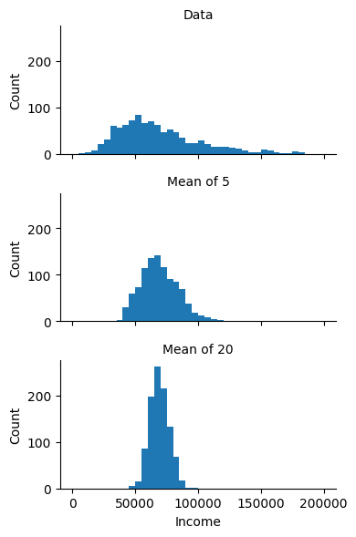
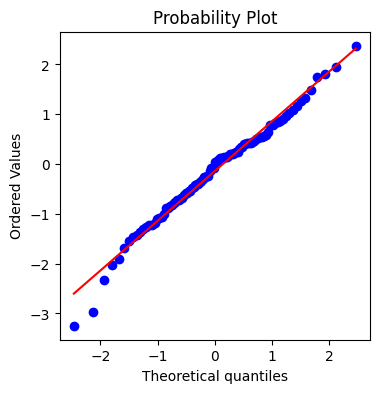
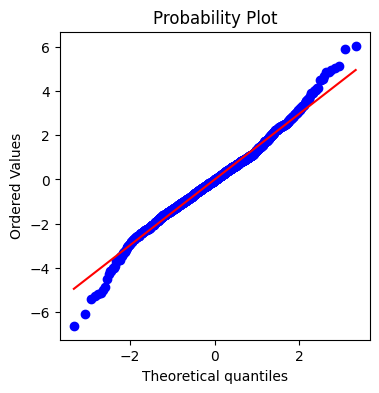
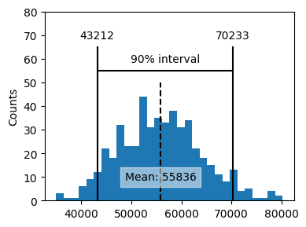
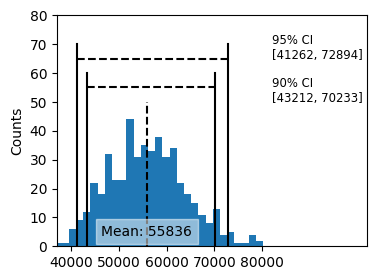
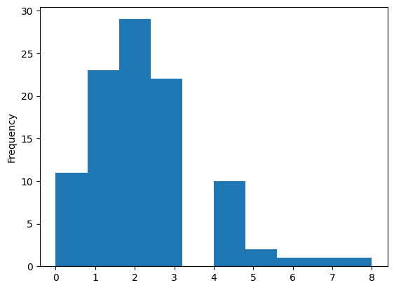
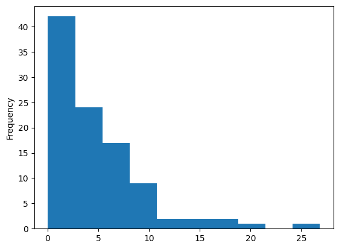
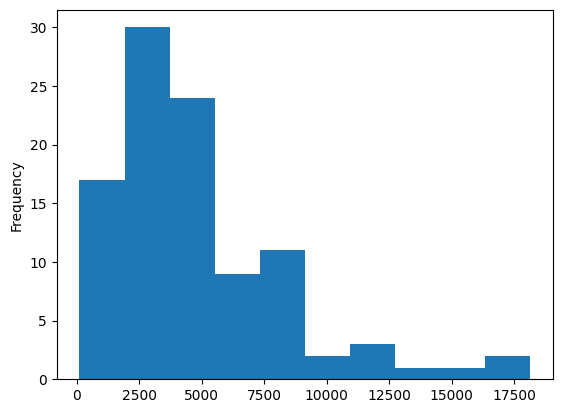

from scipy import stats
from sklearn.utils import resample
import matplotlib.pyplot as plt
import numpy as np
import pandas as pd
import random
import seaborn as sns
random.seed(123)
# Location of the data files. Adjust this path if you keep the data
# files in a different directory.
from pathlib import Path
DATA_DIR = Path('../../data')Chapter 2: Data and Sampling Distributions
- 2019-2026 Peter C. Bruce, Andrew Bruce, Peter Gedeck
Data and Sampling Distributions
Sampling Distribution of a Statistic
loans_income = pd.read_csv(DATA_DIR / "loans_income.csv").squeeze("columns")
sample_data = pd.DataFrame({
"income": loans_income.sample(1000),
"type": "Data",
})
sample_mean_05 = pd.DataFrame({
"income": [loans_income.sample(5).mean() for _ in range(1000)],
"type": "Mean of 5",
})
sample_mean_20 = pd.DataFrame({
"income": [loans_income.sample(20).mean() for _ in range(1000)],
"type": "Mean of 20",
})
results = pd.concat([sample_data, sample_mean_05, sample_mean_20])
g = sns.FacetGrid(results, col="type", col_wrap=1, height=2, aspect=2)
g.map(plt.hist, "income", range=[0, 200000], bins=40)
g.set_axis_labels("Income", "Count")
g.set_titles("{col_name}")
plt.tight_layout()
plt.show()
The Bootstrap
res = stats.bootstrap([loans_income], np.median, n_resamples=1000,
method="basic")
print("Bootstrap Statistics:")
print(f"original: {np.median(loans_income)}")
print(f"bias: {np.mean(res.bootstrap_distribution) - np.median(loans_income)}")
print(f"std. error: {res.standard_error}")
print(f"confidence interval: {res.confidence_interval}")Bootstrap Statistics:
original: 62000.0
bias: -75.51699999999983
std. error: 228.04348717523823
confidence interval: ConfidenceInterval(low=np.float64(62000.0), high=np.float64(62986.8375))# alternative using scikit-learns's resample function
results = []
for _ in range(1000):
sample = resample(loans_income)
results.append(sample.median())
results = pd.Series(results)
print("Bootstrap Statistics:")
print(f"original: {loans_income.median()}")
print(f"bias: {results.mean() - loans_income.median()}")
print(f"std. error: {results.std()}")Bootstrap Statistics:
original: 62000.0
bias: -77.3324999999968
std. error: 224.84385571592387Normal Distribution
Standard Normal and QQ-Plots
fig, ax = plt.subplots(figsize=(4, 4))
norm_sample = stats.norm.rvs(size=100)
stats.probplot(norm_sample, plot=ax)
plt.show()
Long-Tailed Distributions
sp500_px = pd.read_csv(DATA_DIR / "sp500_data.csv.gz")
nflx = sp500_px.NFLX
nflx = np.diff(np.log(nflx[nflx > 0]))
fig, ax = plt.subplots(figsize=(4, 4))
stats.probplot(nflx, plot=ax)
plt.show()
Binomial Distribution
print(stats.binom.pmf(2, n=5, p=0.1))
print(stats.binom.cdf(2, n=5, p=0.1))0.07289999999999995
0.99144Supplementary Material
Figure 2-9 Bootstrap confidence interval for the annual income of loan applicants, based on a sample of 20
print(loans_income.mean())
np.random.seed(seed=3)
# create a sample of 20 loan income data
sample20 = resample(loans_income, n_samples=20, replace=False)
print(sample20.mean())
results = []
for _ in range(500):
sample = resample(sample20)
results.append(sample.mean())
results = pd.Series(results)
confidence_interval = list(results.quantile([0.05, 0.95]))
ax = results.plot.hist(bins=30, figsize=(4, 3))
ax.plot(confidence_interval, [55, 55], color="black")
for x in confidence_interval:
ax.plot([x, x], [0, 65], color="black")
ax.text(x, 70, f"{x:.0f}", horizontalalignment="center", verticalalignment="center")
ax.text(sum(confidence_interval) / 2, 60, "90% interval",
horizontalalignment="center", verticalalignment="center")
meanIncome = results.mean()
ax.plot([meanIncome, meanIncome], [0, 50], color="black", linestyle="--")
ax.text(meanIncome, 10, f"Mean: {meanIncome:.0f}",
bbox={"facecolor": "white", "edgecolor": "white", "alpha": 0.5},
horizontalalignment="center", verticalalignment="center")
ax.set_ylim(0, 80)
ax.set_ylabel("Counts")
plt.tight_layout()
plt.show()68760.51844
55734.1
np.random.seed(seed=3)
# create a sample of 20 loan income data
sample20 = resample(loans_income, n_samples=20, replace=False)
results = []
for _ in range(500):
sample = resample(sample20)
results.append(sample.mean())
results = pd.Series(results)
confidence_interval = list(results.quantile([0.05, 0.95]))
ax = results.plot.hist(bins=30, figsize=(4, 3), color="C1")
ax.plot(confidence_interval, [55, 55], color="black", linestyle="--")
for x in confidence_interval:
ax.plot([x, x], [0, 60], color="black")
ax.text(82000, 50,
f"90% CI\n[{confidence_interval[0]:.0f}, {confidence_interval[1]:.0f}]",
fontsize="small")
confidence_interval = list(results.quantile([0.025, 0.975]))
ax = results.plot.hist(bins=30, figsize=(4, 3))
ax.plot(confidence_interval, [65, 65], color="black", linestyle="--")
for x in confidence_interval:
ax.plot([x, x], [0, 70], color="black")
ax.text(82000, 65,
f"95% CI\n[{confidence_interval[0]:.0f}, {confidence_interval[1]:.0f}]",
fontsize="small")
# ax.text(sum(confidence_interval) / 2, 264, "95 % interval",
# horizontalalignment="center", verticalalignment="center")
meanIncome = results.mean()
ax.plot([meanIncome, meanIncome], [0, 50], color="black", linestyle="--")
ax.text(meanIncome, 5, f"Mean: {meanIncome:.0f}",
bbox={"facecolor": "white", "edgecolor": "white", "alpha": 0.5},
horizontalalignment="center", verticalalignment="center")
ax.set_ylim(0, 80)
ax.set_xlim(37000, 102000)
ax.set_xticks([40000, 50000, 60000, 70000, 80000])
ax.set_ylabel("Counts")
plt.show()
Visualization of Distributions
Poisson Distribution
sample = stats.poisson.rvs(2, size=100)
pd.Series(sample).plot.hist()
plt.show()
Exponential Distribution
sample = stats.expon.rvs(scale=5, size=100)
pd.Series(sample).plot.hist()
plt.show()
Weibull Distribution
sample = stats.weibull_min.rvs(1.5, scale=5000, size=100)
pd.Series(sample).plot.hist()
plt.show()